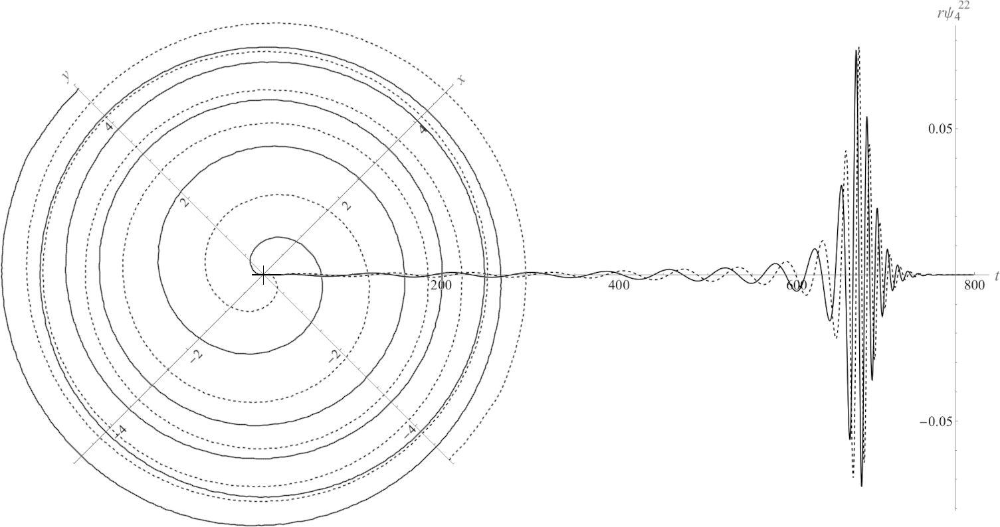
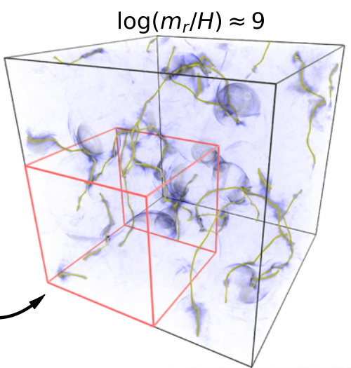

Solving PDEs With Code Generation
Scientists frequently work to understand complicated space-time dynamics or conservation laws by describing their evolution using Partial Differential Equations (PDEs). Simply put, PDEs predict how a quantity evolves by calculating derivatives in space and time.
While at Berkeley Lab, I worked with other computational scientists to create automated code generation methods for solving PDE systems using either Eulerian or Lagrangian techniques.
Our codes are open-source, and our methods are generally useful for a wide variety of scientific contexts where PDEs exist or could be devised but would be challenging to solve. We can translate symbolic PDEs into high performance code very simply and create a simulation package ready to run on modern GPU-accelerated supercomputers.
If you would like to collaborate on such research, you are always welcome to reach out.
Creating STvAR To Generate Adaptive-Mesh Eulerian PDE Solvers
As part of the ExaStar team within the DOE Exascale Computing Project, I worked with Adam Peterson to solve the numerical general relativity equations using the AMReX framework for block-structured adaptive mesh refinement.
The Einstein equations are notoriously tricky to solve numerically, so we first had to decide on a reliable numerical technique that we could also combine with ExaStar solvers for hydrodynamics or radiation transport.
We chose the Method of Lines numerical technique, which replaces all spatial derivatives with finite-difference derivatives. The Method of Lines technique leaves the time derivatives in the equations symbolic, but it tells us exactly how to compute them using finite-difference discretization for all the other terms in the PDEs.
However, the Einstein equations are notoriously lengthy when expanded into numerical form. Translating hundreds of arithmetic terms into computer code would be laborious and it would be very easy to make mistakes.
We needed a fast, reliable solution, so we turned to symbolic code generation based on the open-source Python package for symbolic mathematics, Sympy. Sympy is capable of translating symbolic expressions into C++ or Fortran computer code.
We used Sympy to write STvAR, a Python and C++ framework. The Python part of STvAR uses Sympy to discretize all the spatial partial derivatives appearing in a general set of PDEs using finite differencing up to fourth order. After replacing all continuous spatial derivatives with finite differences, we rearrange our PDEs to define the continuous time derivatives, still symbolic. STvAR then generates code to compute all the PDE time derivatives in C++.
The STvAR C++ framework then incorporates the generated C++ time derivatives with preprocessor include statements. Our C++ solver framework then reads user-supplied initial conditions and evolves the PDEs forward in time using a variety of Runge-Kutta explicit time integration methods up to fourth order. We use the AMReX framework to provide block-structured adaptive mesh refinement, and we symbolically generate our refinement tagging C++ code.
STvAR Enables Users To Leap Into Solving PDEs With High-Performance Computing
STvAR is freely available at the STvAR GitHub.
STvAR thus provides computational scientists with an easy way to get started solving their PDE systems. STvAR generates high-performance, portably parallel code that leverages adaptive mesh refinement to focus computational resources where they are most needed.
Users just starting out with high performance computing do not need to understand all the finer details of multi-level synchronization or parallel ghost cell communication in order for their solver to get up and running. STvAR handles all these algorithmic details automatically with sensible default options. Once the code is running, users can take advantage of all the general domain decomposition and refinement customization options AMReX supports simply by reviewing the AMReX documentation and altering their inputs files, no C++ required.
STvAR enabled us to create a numerical solver for general relativity and then simulate black hole mergers to compute their radiated gravitational wave signature that an Earth-based detector like LIGO could measure.

We published our code generation validation work for general relativity in Peterson et al. (2023).
STvAR-Generated Code Narrows Predicted Limits On Hypothetical Axion Dark Matter
Our code-generation research to solve numerical general relativity soon sparked interest in other fields.
Ben Safdi and his collaborators were coincidentally studying a hypothesized axion dark matter model they wished to solve on cosmological scales.
They contacted us wishing to use our code generation framework to solve the axion field equations with adaptive mesh refinement.
We worked with these dark matter researchers to construct a simulation code solving the axion field equations with high order finite differencing. The primary challenge was following the axion string evolution on the cosmological scales required, requiring careful adaptive mesh refinement.
Our collaboration enabled the team to simulate axion string evolution and radiation on cosmological spacetime scales with unprecedented resolution.

These new simulations tightened the current cosmological constraints on the range of axion mass-energy by more than a factor of three.
For details, see Buschmann et al. (2022).
Code Generation For Lagrangian PDE Solvers
Sometimes Eulerian methods introduce too much artificial numerical diffusion into a set of PDEs where transport dominates the physics of interest.
The reason for this is fundamentally that Eulerian methods represent the solution as values at fixed points in space, or as values corresponding to small volumes of space.
When physical matter moves across the domain, the underlying spatial grid remains fixed in place.
Depending on the discretization method, there may be smaller or larger amounts of numerical errors introduced as a result of this mis-match between physical transport and the underlying grid.
Lagrangian methods address this issue by simply moving the grid points or discrete volumes along with the physical matter they represent.
For arbitrary three dimensional flows, where turbulence is possible, this can quickly lead to a tangled grid. For this reason, Lagrangian techniques are generally chosen when the computational complexity of grid tangling can be avoided.
For example, astrophysical radiation can be modeled by assigning a Lagrangian particle in code to represent a set of physical photons or neutrinos. The AMReX framework we used for Eulerian AMR supports Lagrangian particles on adaptive meshes as well for such cases.
Code generation is still very useful when those particles have non-trivial evolution.
Suppose you are modeling neutrino radiation transport with Lagrangian particles, and you decide you need to evolve the neutrino quantum flavor state as well. This requires solving complex-valued equations associated with each particle as it travels, picking up source terms for that equation from nearby neutrinos.
To see how code generation and a general Lagrangian framework can successfully address this scenario, see my Neutrino Quantum Kinetics research page.